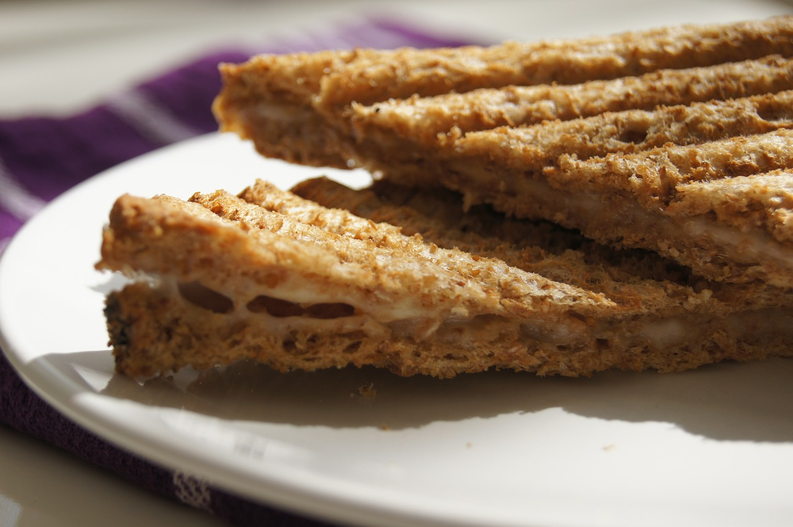

Jalapeno Grilled Cheese Sandwich

A delicious jalapeno poppers grilled cheese sandwich!
Ingredients
- 2 ounces cream cheese, softened
- 1 tablespoon sour cream
- 10 pickled jalapeno pepper slices, or to taste - chopped
- 2 ciabatta sandwich rolls
- 4 teaspoons butter
- 8 tortilla chips, crushed
- 1/2 cup shredded Colby-Monterey Jack cheese
Steps
- Combine cream cheese, sour cream, and pickled jalapeno in a small bowl. Set aside. Preheat a skillet over medium heat.
- Slice each roll in half horizontally, then slice the rounded tops off the ciabatta rolls to make a flat top half. Spread 1 teaspoon butter on the doughy cut side of the bottom bun and 1 teaspoon butter on the now flattened top bun. Place 1/2 of the cream cheese mixture, 1/2 of the crushed chips, and 1/2 of the shredded cheese on the non-buttered side of the bottom bun. Place the top half of the bun on the sandwich and place the sandwich on the hot skillet. Repeat with the second sandwich.
- Grill until lightly browned and flip over, about 3 to 5 minutes; continue grilling until cheese is melted and the second side is golden brown.